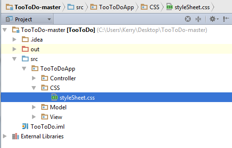

CSS
This page will not make you a master at CSS, but it will hopefully give you a general idea of their purpose and use.
What are they?
CSS stands for cascading style sheets, these are used for describing and personalizing documents such as FXMLS!
What do they look like?
Below we show the code for our application's css.
.root {
-fx-background-color: #87cefa;
}
.label {
-fx-font-size: 12;
-fx-font-weight: bold;
-fx-text-fill: white;
}
.button {
-fx-effect: dropshadow( three-pass-box , rgba(0,0,0,0.6) , 2, 0.0 , 0 , 1 );
}
Notice anything?
You may notice based on indentation, that each section is headed with familiar objects. These are class selectors and are always preceded by a dot (.). This tells us which class the properties described within the curly braces go to. .root makes the properties shown apply to the root node of a scene. Create a new folder with our view, model, and controller folder. Call this folder CSS and create a text document within the folder. On the first save of this document, save it as "styleSheet.css" as shown below.
Background Color
The properties described should seem pretty self explanatory but just in case they don't we will go over them. For any of the color properties feel free to pick whichever colors you prefer! In the code below we set the background color of the root node to a nice blue color in hexidecimal. (You can get the hexidecimal values for most colors here)
.root {
-fx-background-color: #87cefa;
}
This will apply to ALL of our views. Note the structure, property name followed by a colon followed by a value then ended with a semicolon.
Label Design
Maybe we want to make sure all label font size is 12, bold, and white. We do this by changing the -fx-font-size, -fx-font-weight, and -fx-text-fill.
.label {
-fx-font-size: 12;
-fx-font-weight: bold;
-fx-text-fill: white;
}
Notice anything interesting? Well, we used a name of a color as oppose to a hexidecimal value. This is OKAY! CSS actually supports 17 keywords for color. These keywords are shown here.
Button Design
Let's add a nice effect to our buttons say, a shadow that appears when the button is selected. This can be done with the following code.
.button {
-fx-effect: dropshadow( three-pass-box , rgba(0,0,0,0.6) , 2, 0.0 , 0 , 1 );
}
dropshadow() takes in 6 values. A blur type, color, and 4 numbers. The color is simply the color of the shadow. The first number determines the radius of the shadow. The second number is the spread of the shadow and the last two are the x and y offset respectively. RGBA() takes in four numbers the define the color. The first number assigns the Red value. The second value Green. The third value Blue. And last but not least, Alpha. This is the opacity and should be between 0 (transparent) and 1 (opaque). The color values should be between 0 and 255.
Using Our CSS
We simply need to provide the fxml files with a path to the css. Open each fxml and give the root pane's stylesheets property the following value.

Our application should now have a much more original look. The JavaFX CSS Reference Guide is massive but informative and can be found here.
Congratulations, you're done with the application!